THE BRAIN BRAKE ANIMATIC
THE FIRST HALF DOES NOT GET DRAWN ON SCREEN, IT SURFACES. Think of a coin under a sheet of paper and a pencil rubbed across it until the shape comes through. Parts arrive one at a time and in an order that is a law, not a preference: WHAT SUPPORTS COMES FIRST. The road, then the shoes standing on it, then the legs, then the trees either side, and last of all the man. A shoe cannot appear before the road it stands on. Ground before figure, and the thing he stands on before the thing that stands. Each part comes up out of blank paper in a few frames and then simply is. USE IT ONLY TO OPEN A SCENE. It is how the drawn world comes into existence, so it happens once at the start and then stops; from the next frame on, the animation is ordinary. It returns exactly once more, on the first frame of the muscle sequence, because that is a second world being entered. Anywhere else it becomes decoration and stops meaning anything. It is cheap to make, which is the point: a few frames of an image resolving is a filter and a mask, not drawn inbetweens. SO THE FILM HAS ONE GRAMMAR PER HALF. Before he closes his eyes, things arrive: the world is manifested out of paper. After he closes his eyes, nothing arrives and we move instead: every transition is a passage through a surface. One is the world coming to him, the other is him going through the world.
FROM PHASE 5 ONWARD THE FILM DOES NOT CUT, IT FLIES. Think of an aeroplane going through cloud: you do not arrive by cutting, you arrive by passing through something. We fly in toward his head as his eyes close, pass into white, rise through the vortex, arrive at the door, and he is drawn through it rather than walking in. Then we fly backwards and the house assembles around what we have just entered, fly on through the rooms, and land at the skull door. The landing is the only stop, because the conversation needs stillness. Then we fly at the banner and through it, and the key is given in the white on the other side. The credits fly too, card to card, through cloud. IF A BEAT SEEMS TO NEED A CUT, LOOK AGAIN: there is nearly always a surface to pass through, and there is no exception anywhere. The key falls the whole way and the camera never leaves it. Coach Brain's hand and Manan's never share a frame because an entire descent lies between them, which is better than a cut: a cut is a decision the audience can feel, a fall is one they take with the object. THE MEMORIES BEHIND THE FALL ARE MOTION BLURRED, streaked vertically in the direction of the fall, because they are passing at speed. Not so much that they become mush: you must still be able to make out what each one is if you look for it. THE KEY STAYS SHARP, because the camera is travelling with it, and that difference between the sharp key and the streaked world is what makes the fall read as fast.
The whole film as a storyboard, in order. 57 frames drawn, 10 holding as placeholders, 96 keyframes live in all. The count here is lower than the last because a shot with both a generated stand-in and a real footage composite shows one of them on this page and keeps the other for its scene page. Placeholders are shown on purpose, so what is still waiting is as visible as what is finished. This page is built from the catalogue, so it is current the moment anything is filed. Everything we have collected for each phase, kept and abandoned, is on brainstorm.
Every frame in order, with what it is, what it means and HOW IT MOVES: the zoom, the push, the frottage, the passage through the surface. Made to print and mark up.
Not ready to download. The running order changed today and this document has not caught up, so it is held back rather than handed over wrong. This page is the live one and is always current.
The book the film was made from, written as though it came first. 3106 words, fourteen chapters, rooms described that the camera only passes and reasons given that two minutes can only imply. It reads itself aloud in two voices, about sixteen minutes, remembers where you stopped, and can follow the voice word by word on the page.
Title
1 drawn
The runner
15 drawn


The bicycle
1 shot, 3 referenceTesting where the limit is
3 shot, 2 reference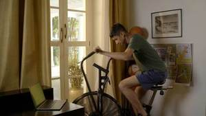
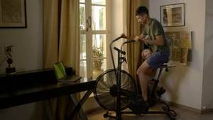
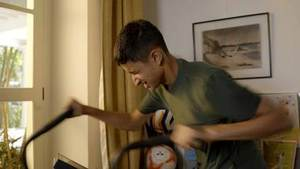
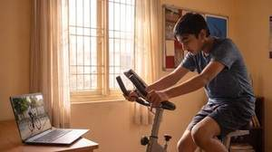
Tired, and the wall
1 shot, 1 referenceHe closes his eyes
1 shot, 1 referenceThe vortex, up
3 drawn
The house of the body
9 drawn, 1 shotHe arrives out of the white and the door is already giving off light. One continuous pull back from here: as the camera draws away he goes inside, and by the time we see the whole building the door is shut. He is keyed into the doorway and taken out of the composite part way through, so he is never drawn.
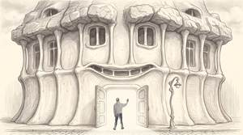
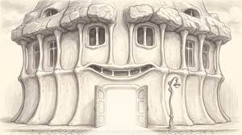

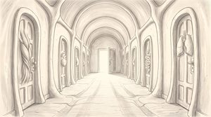
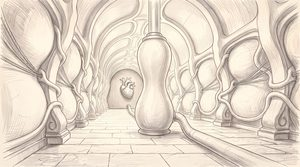

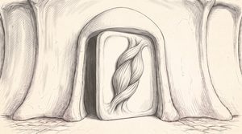
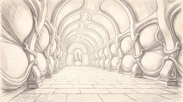
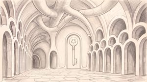
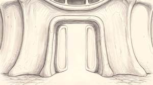
He sees the key, and goes in
1 drawnThey introduce each other
7 drawnNeither board arrives finished. Manan writes what he read, line by line, in white chalk. Coach Brain answers on the whiteboard in black marker: same layout, same three lines, same gauge, every value reversed. Six build states exist for each board and the middle one is shown here.


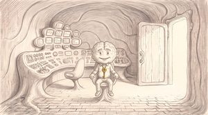

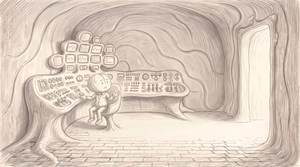
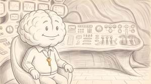
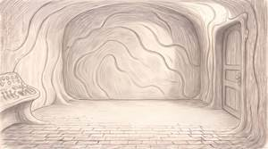
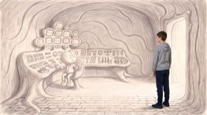
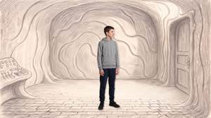
The two theories, on the board
3 drawn

{kind=link}
{kind=link}
The conclusion, and goodbye
1 referenceThe vortex down, and the key falls with him
1 drawn, 1 referenceHe catches it
5 drawn, 1 shotCoach Brain lets the key go and it falls through an empty frame. His hand and Manan’s are never on screen together, so nothing is composited and the lighting difference between the drawing and the footage does not matter. The key falls out of the sky, turning and growing, and the whole film replays behind it in reverse, so faint it is almost not there: the boards, the room, the house, and the avenue as it lands. It crosses from pencil to photograph on the way down, so no single frame is the moment it becomes real. THERE IS NO CUT ANYWHERE IN THIS. The camera never stops following the key. Coach Brain’s hand leaves the top of the fall and Manan’s arrives at the bottom of it, and the two of them never share a frame because a whole journey lies between them.
{kind=link}
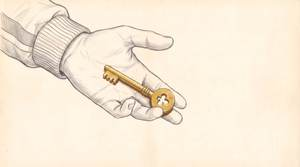
{kind=link}
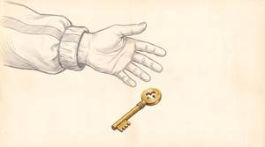
{kind=link}
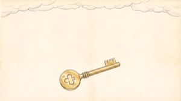
{kind=link}
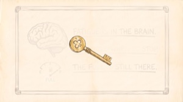
{kind=link}
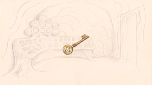
{kind=link}
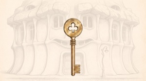
The real key modelled from the photographs, one mesh with two materials: slot 0 polished brass, slot 1 flat drawn cream. The mesh never changes, only the surface, so the key crosses from the drawn world to the real one without a vertex moving. Both files in one folder, open Blender, Scripting tab, Run.
Credits, and the dedication
2 drawnTHE BRAIN BRAKE
The Central Governor Theory · Breakthrough Junior Challenge 2026